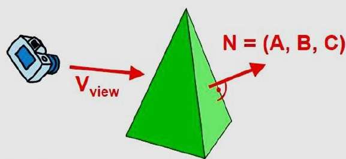

- Object surfaces that are oriented away from viewer are called as back surfaces or faces.
the back surfaces of cube are completely blocked by the cube itself
and hiddenfrom viewer.
Therefore,we can identify and remove these back surfaces.We know that equation of plane is given by,
Ax+By+Cz+D=0 (1)
- In object space method,the identification of back surfaces is based on above equation.From above equation,
we can say,if a point (X,Y,Z) satisfies the equation then the point (X,Y,Z)is lying on the plane.But,
if Ax+By+Cz+D < 0 (2)
It means (X,Y,Z) lies on negative side.
And if
Ax+By+Cz+d > 0 (3)
It means (X,Y,Z) lies on positive side.
- If we consider any point (X,Y,Z) as viewing point,then any plane which satisfies the equation (2) must be back face.
After finalizing back sarface we have to remove it.
- Let N = (A,B,C) be the normal vector.In right handed system with viewing direction along the negative Z-axix,the polugon is back face if C<0

- Also we cannot see any surface whose normal has z component C=0.
Thus we can say any polygon is classified as a back surface when its normalnvector is negative